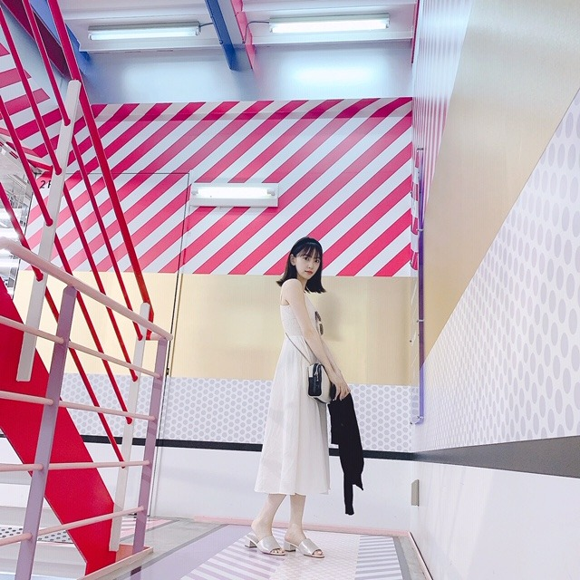
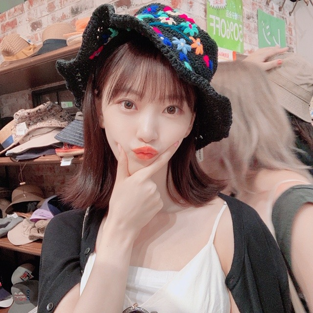

2019/0726Friわたしは晴れ女で風女です
やほー

onepiece ... zara
cardigan ... zara
shoes ... oriental traffic
bag ... 3.1 phillip lim
sunglasses ... miumiu
暑いですね〜〜〜
みなさん暑さに負けず、頑張ってますか？☺︎
水分補給が大事です！
常温の水をまめに！！
わたしは大好きな桃を毎朝食べて頑張ってます✨
私は久しぶりのオフをいただき
お昼は飯窪春菜ちゃんと
かき氷を食べてからチャイルドプレイを観て
夕方からはIZ*ONEのカンへウォンちゃんとご飯を食べてお買い物に行きました
ホラー映画好き仲間☺︎
食べ物の趣味も合うし一緒にいてまったり心地いいです！
チャッキー最高でした！
純粋という度を超えた狂気。子どもも大人も機械に頼りすぎている今の社会問題に対してのメッセージを少しばかり感じました
ぶっ飛んでたー！
it2もusも早く観たいなー
カンちゃんとはご飯をたーくさん食べてから
お買い物に行きました！
おそろいのtシャツと香水を買ったの☺︎たくさん着よ〜
いつも会う度褒めてくれるんだけど
わたしは心の中でカンちゃんの美人さにはずっと敵わない...！って叫んでます笑
写真もたくさん撮ってくれるんだ！
しかも上手いの☺︎
カンちゃんカメラ

笑
また載せますね〜
海行きたいな〜
では。
2019/07/26 17:24
コメント(279)
お疲れ様です!
未央奈ちゃん、ブログ更新ありがとうございます！
ここ数日、急に暑くなってきましたよね！
でも、よく考えたらもう7月の終わりですもんね！
お互い、こまめな水分補給をして、熱中症に気を付けましょうね！！
未央奈ちゃんの交友関係はとても広くて本当に素晴らしいですね！
僕はあまり友達が多い方ではないので、羨ましいです！！
ここ数ヶ月を振り返っても、乃木坂のイベントなどで乃木坂のファン仲間と会ったりはしましたが、それ以外だと、1人の親友くんとは1ヶ月に1回くらいのペースで会えていますが、その子以外だと、全然遊びに行ったりしてないです…
もう少し交友関係を広げたほうがいいなとは思うのですが、一人や気の許す親友くんとの方が、楽だと感じてしまうのですよね。
中々難しいです。
これから更に暑くなるとは思いますが、お互い頑張っていきましょう！！
未央奈ちゃん、大好きです
ここ数日、急に暑くなってきましたよね！
でも、よく考えたらもう7月の終わりですもんね！
お互い、こまめな水分補給をして、熱中症に気を付けましょうね！！
未央奈ちゃんの交友関係はとても広くて本当に素晴らしいですね！
僕はあまり友達が多い方ではないので、羨ましいです！！
ここ数ヶ月を振り返っても、乃木坂のイベントなどで乃木坂のファン仲間と会ったりはしましたが、それ以外だと、1人の親友くんとは1ヶ月に1回くらいのペースで会えていますが、その子以外だと、全然遊びに行ったりしてないです…
もう少し交友関係を広げたほうがいいなとは思うのですが、一人や気の許す親友くんとの方が、楽だと感じてしまうのですよね。
中々難しいです。
これから更に暑くなるとは思いますが、お互い頑張っていきましょう！！
未央奈ちゃん、大好きです
ブログ更新ありがとう！
みおちゃん桃が好きなんだね☺︎
インスタでかりんちゃんも好きって言ってたよ〜！
みおちゃんは色んなグループの子と仲良しですごいなっていつも思ってる！
IZ*ONEの子は前にコラボしたことあるから仲良くなったのかな？
みおちゃんが楽しく過ごせたみたいでよかった❤︎
最後の写真めっちゃかわいい☺︎
海外だったらどこに行ってみたいの？
明日の個握めっちゃ久しぶりに会えるから楽しみにしてるね〜！
みおちゃん桃が好きなんだね☺︎
インスタでかりんちゃんも好きって言ってたよ〜！
みおちゃんは色んなグループの子と仲良しですごいなっていつも思ってる！
IZ*ONEの子は前にコラボしたことあるから仲良くなったのかな？
みおちゃんが楽しく過ごせたみたいでよかった❤︎
最後の写真めっちゃかわいい☺︎
海外だったらどこに行ってみたいの？
明日の個握めっちゃ久しぶりに会えるから楽しみにしてるね〜！
堀しゃん「ヤッホー」ブログ更新ありがとう。
台風きてるね、過ぎたら暑いぞー！ホント嫌だね。
白いドレスきれいで可愛くて最高です。
堀ちゃんの指、超後ろに反るね、その手のポーズ真似できないんだけど(笑)
神宮ではぜひ晴れ女で来てください、でも風女はダメよ！無風で。
台風きてるね、過ぎたら暑いぞー！ホント嫌だね。
白いドレスきれいで可愛くて最高です。
堀ちゃんの指、超後ろに反るね、その手のポーズ真似できないんだけど(笑)
神宮ではぜひ晴れ女で来てください、でも風女はダメよ！無風で。
やほやほ～
未央奈～ こんにちは
ブログ更新ありがとうございます。
「FNSうたのなつまつり」&「レコメン」、おつかれさまでした。「レギュラー」だからという責任感も伝わってきていましたよ。
「晴れ女」「風女」？ そうかな？
またまた台風が近づいてきました。紀伊半島から、東海地方にかけてまたもや直撃のようです。岐阜の長良川花火も早々と延期が決まりましたが‥‥。
まだできたてで、それほど発達していないのが救いのようですが、いずれにせよ、大雨は降りそうで、気をつけたいと思います。日曜日、横浜大丈夫かな？
春奈ちゃんとカンちゃん、うらやましい限りですね。未央奈の交際範囲広いですね、積極的に話しかけられるコツなんかあれば、またお聞かせください。そういえば、まいちゅんがいつも「人見知り」だから苦手って言ってたけど、気がつけば、こじまこちゃんや欅の子たちと「新内組」で鍋パしたりしてますから、「経験」かな？ そんな未央奈の根底にあるのは、松井玲奈さんですよね。デビュー当時から可愛がってもらっていたし、まさかそのあと一緒に「乃木坂」で活動するなんて思っても見なかったし‥‥。ぜひとも、これからもそんな「人脈」、大切にしていってくださいね。
ブログ更新ありがとうございます。
「FNSうたのなつまつり」&「レコメン」、おつかれさまでした。「レギュラー」だからという責任感も伝わってきていましたよ。
「晴れ女」「風女」？ そうかな？
またまた台風が近づいてきました。紀伊半島から、東海地方にかけてまたもや直撃のようです。岐阜の長良川花火も早々と延期が決まりましたが‥‥。
まだできたてで、それほど発達していないのが救いのようですが、いずれにせよ、大雨は降りそうで、気をつけたいと思います。日曜日、横浜大丈夫かな？
春奈ちゃんとカンちゃん、うらやましい限りですね。未央奈の交際範囲広いですね、積極的に話しかけられるコツなんかあれば、またお聞かせください。そういえば、まいちゅんがいつも「人見知り」だから苦手って言ってたけど、気がつけば、こじまこちゃんや欅の子たちと「新内組」で鍋パしたりしてますから、「経験」かな？ そんな未央奈の根底にあるのは、松井玲奈さんですよね。デビュー当時から可愛がってもらっていたし、まさかそのあと一緒に「乃木坂」で活動するなんて思っても見なかったし‥‥。ぜひとも、これからもそんな「人脈」、大切にしていってくださいね。
夏バテには気を付けてね～☺️
交友関係が広いですね。白いワンピース、とてもお似合いです。
イット２もだけど、来る、とかDVDで見たらかなりの中毒映画でリピートしまくるホラーらしい！？
今なら１０月日米同時公開するDC映画でいよいよ、ついに単独主演作品になるジョーカー！！！
が気になるところです・・・。
ホラースリラー系だとブライアン・デ・パルマ監督作品とか探して観て下さい物凄い細かく出来てる傑作ばかりです！！！
では体調に気を付けて過ごしましょう・・・。
今なら１０月日米同時公開するDC映画でいよいよ、ついに単独主演作品になるジョーカー！！！
が気になるところです・・・。
ホラースリラー系だとブライアン・デ・パルマ監督作品とか探して観て下さい物凄い細かく出来てる傑作ばかりです！！！
では体調に気を付けて過ごしましょう・・・。
えぇー！！！？？
みおな、へウォンちゃんと仲良いんだ！！
2人とも好きだからめっちゃびっくりしたし、めっちゃ嬉しい♡♡
また、へウォンちゃんとの写真載せてほしいな♡
みおな、へウォンちゃんと仲良いんだ！！
2人とも好きだからめっちゃびっくりしたし、めっちゃ嬉しい♡♡
また、へウォンちゃんとの写真載せてほしいな♡
みおちゃんブログ更新ありがとう♪
暑さに負け……てるかもしれないけど頑張ってます笑 今六連勤の真っ只中だよ笑
めちゃくちゃきついけど、気合いで乗り切るよ！
みおちゃんパワーだ！！笑
福岡のトゥモロー⊿
暑さに負け……てるかもしれないけど頑張ってます笑 今六連勤の真っ只中だよ笑
めちゃくちゃきついけど、気合いで乗り切るよ！
みおちゃんパワーだ！！笑
福岡のトゥモロー⊿
ご活躍中の堀未央奈さま。
睡眠取れていますか！？ ←(-。-)y-゜゜゜ (^_^)
今頃 ブログコメント 書いてる 僕って なんなんだ！！？？ (^_^;)
草木も眠る 丑三つ時は もう直ぐ！！ am2:00-2:30
まあ！ リタイア組で 農業 コシヒカリ 作っているだけだから、
睡眠は 自由で 本能に赴くまま！！ (^。^)y-.。o○
※コシヒカリは 出穂（しゅっすい）し←稲穂が少し出た状態から、
穂揃い期（全体の80-90％穂が出る）
━━━━━━━━━━━━━━━━━━━━━━
東京の方も 日照不足ですが 徳島も同様！！
で、稲刈りは 3-7日 例年より 遅れる見込み。
阿波踊り期間の 8/12-15日 お盆の暑い中 コンバインで 稲刈り (^_^)v
ばいばい (@^^)/~~~
ps：桃って 皮が剥きぬくくないですか！？ (^_-)-☆
睡眠取れていますか！？ ←(-。-)y-゜゜゜ (^_^)
今頃 ブログコメント 書いてる 僕って なんなんだ！！？？ (^_^;)
草木も眠る 丑三つ時は もう直ぐ！！ am2:00-2:30
まあ！ リタイア組で 農業 コシヒカリ 作っているだけだから、
睡眠は 自由で 本能に赴くまま！！ (^。^)y-.。o○
※コシヒカリは 出穂（しゅっすい）し←稲穂が少し出た状態から、
穂揃い期（全体の80-90％穂が出る）
━━━━━━━━━━━━━━━━━━━━━━
東京の方も 日照不足ですが 徳島も同様！！
で、稲刈りは 3-7日 例年より 遅れる見込み。
阿波踊り期間の 8/12-15日 お盆の暑い中 コンバインで 稲刈り (^_^)v
ばいばい (@^^)/~~~
ps：桃って 皮が剥きぬくくないですか！？ (^_-)-☆
未央奈～☆☆
暑さに負けず、頑張ってるよ～
毎日、未央奈パワーを補給しているからね！笑
カンちゃんが未央奈を褒める気持ち、めっちゃ分かるなー
未央奈を目の前にしたら、もう褒めずにはいられないからね。
カンちゃんが撮った写真も、未央奈の表情が最高！！
さすがだ～
暑さに負けず、頑張ってるよ～
毎日、未央奈パワーを補給しているからね！笑
カンちゃんが未央奈を褒める気持ち、めっちゃ分かるなー
未央奈を目の前にしたら、もう褒めずにはいられないからね。
カンちゃんが撮った写真も、未央奈の表情が最高！！
さすがだ～
未央奈
オフは楽しんでいたみたいですね
とりあえず24枚目のシングル
11月9日の５部が二枚当たったよ
他の部は外れてしまって残念だけど
久しぶりに会えるよ❗♪ヽ(´▽｀)/
またコメントするね
SONYでした
改めて755返信ありがとー ✨
オフは楽しんでいたみたいですね
とりあえず24枚目のシングル
11月9日の５部が二枚当たったよ
他の部は外れてしまって残念だけど
久しぶりに会えるよ❗♪ヽ(´▽｀)/
またコメントするね
SONYでした
改めて755返信ありがとー ✨
みおなかわいいーーー！
充実した休日だったみたいで
リフレッシュできたんじゃない？
俺も桃食べたいなぁ～
海行きたいね！
日焼け止め塗らないと焼け過ぎて大変だけど
リフレッシュできたんじゃない？
俺も桃食べたいなぁ～
海行きたいね！
日焼け止め塗らないと焼け過ぎて大変だけど
堀さん、こんばんは。
オフにもかかわらず可愛い写真を沢山撮ってくれてありがとうございます。堀さんの可愛さは休み知らずですね。
かき氷もホラー映画も夏らしくて良いですね。
僕もチャイルドプレイ見ました。トイストーリーの続編かつターミネーターの前日譚みたいな話で面白かったですね。純粋すぎてホラー映画を真似る場面は、作品の悪影響までも作品に取り込むという凄いことをしてる気がしました。
カンへウォンさんに褒められてる間も、先日の工事中で日村さんに目が大きくて綺麗と褒められてた時みたいに、褒められるほどに更に可愛くなる特性を発揮してたのでしょうか。見れなくて残念です。
写真といえば乃木撮の毛皮？にくるまれてる写真かわいいですね。毛並みも良くて高貴な猫のようです。
では、桃水飲んで水分補給しますね。ブログ更新してくれてありがとうございます。
オフにもかかわらず可愛い写真を沢山撮ってくれてありがとうございます。堀さんの可愛さは休み知らずですね。
かき氷もホラー映画も夏らしくて良いですね。
僕もチャイルドプレイ見ました。トイストーリーの続編かつターミネーターの前日譚みたいな話で面白かったですね。純粋すぎてホラー映画を真似る場面は、作品の悪影響までも作品に取り込むという凄いことをしてる気がしました。
カンへウォンさんに褒められてる間も、先日の工事中で日村さんに目が大きくて綺麗と褒められてた時みたいに、褒められるほどに更に可愛くなる特性を発揮してたのでしょうか。見れなくて残念です。
写真といえば乃木撮の毛皮？にくるまれてる写真かわいいですね。毛並みも良くて高貴な猫のようです。
では、桃水飲んで水分補給しますね。ブログ更新してくれてありがとうございます。
ほりっぴ～、ナンチです♪
ブログ更新ありがとう～
季節にかかわらず湘南はすてきなところ
夏の海にも遊びに来てね
あ～、かき氷がめっちゃ食べたくなってきたよ
横浜個握まであと2日
めっちゃ楽しみ～
ブログ更新ありがとう～
季節にかかわらず湘南はすてきなところ
夏の海にも遊びに来てね
あ～、かき氷がめっちゃ食べたくなってきたよ
横浜個握まであと2日
めっちゃ楽しみ～
おはみおにゃ♪ヽ(´▽｀)/梅Σ(゜Д゜)海行きたいね❗(￣ー￣)海♪ヽ(´▽｀)/
更新有難う！
御疲れ様でした！
とても可愛いです、
二人が楽しんで、良かったです。
何時も頑張って下さい、
常に必ずしても応援しています。
どうか御身体に気を付けて下さい。
ずっと大好き！

御疲れ様でした！
とても可愛いです、
二人が楽しんで、良かったです。
何時も頑張って下さい、
常に必ずしても応援しています。
どうか御身体に気を付けて下さい。
ずっと大好き！
未央奈ちゃん更新ありがとー！
オフしっかり楽しめたみたいで何よりです！
しかし未央奈ちゃん可愛いなー！
お二人に負けてないよー(^o^)
あなたの笑顔が一番ですっ！！
暑い夏だから未央奈ちゃんも体調には気をつけてね！
自分も桃買ってこよーかな？？
オフしっかり楽しめたみたいで何よりです！
しかし未央奈ちゃん可愛いなー！
お二人に負けてないよー(^o^)
あなたの笑顔が一番ですっ！！
暑い夏だから未央奈ちゃんも体調には気をつけてね！
自分も桃買ってこよーかな？？
未央奈〜ブログ更新ありがとう〜
桃って美味しいよねー
それにしても最近ほんとに暑いよね〜
未央奈も暑さに負けないで頑張って！
それにしてもほかのグルーブの人とも仲良いとは さすが未央奈
握手会と全ツ楽しみにしてるね！
未央奈、大好き(♡ >ω< ♡)
桃って美味しいよねー
それにしても最近ほんとに暑いよね〜
未央奈も暑さに負けないで頑張って！
それにしてもほかのグルーブの人とも仲良いとは さすが未央奈
握手会と全ツ楽しみにしてるね！
未央奈、大好き(♡ >ω< ♡)
未央奈ちゃんおはよー☀️ ‼️
他グループとも仲良くてる未央奈ちゃん本当大好き ✨
未央奈ちゃんと飛鳥ちゃんの2トップで乃木坂盛り上げて行くん楽しみにしてるよ❤️
全国ツアー大阪と神宮応援しに行くからね✨
未央奈ちゃん だ～い好き ✨❤️
他グループとも仲良くてる未央奈ちゃん本当大好き ✨
未央奈ちゃんと飛鳥ちゃんの2トップで乃木坂盛り上げて行くん楽しみにしてるよ❤️
全国ツアー大阪と神宮応援しに行くからね✨
未央奈ちゃん だ～い好き ✨❤️
未央奈ちゃんの交友関係の広さスゴい！
カンちゃん、韓国の動画でも未央奈ちゃん本当に可愛い‼︎って絶賛してたよー╰(*´︶`*)╯♡食べ物大好きコンビが何食べたか気になる！そして帽子の写真で未央奈ちゃんの後ろに写ってる人、髪色から勝手に宮脇咲良ちゃん、チェヨンちゃんかと思ってしまった。
カンちゃん、韓国の動画でも未央奈ちゃん本当に可愛い‼︎って絶賛してたよー╰(*´︶`*)╯♡食べ物大好きコンビが何食べたか気になる！そして帽子の写真で未央奈ちゃんの後ろに写ってる人、髪色から勝手に宮脇咲良ちゃん、チェヨンちゃんかと思ってしまった。
ブログ更新ありがとう！
夏暑いから
海行きたいね！
体調管理しっかりね。
夏暑いから
海行きたいね！
体調管理しっかりね。
ブログ更新ありがとうございます！ホラー映画仲間良いですねーーーーーー！！ ホットギミックとても良かったです！ 応援してます！大好きです！
堀ちゃん、大好きだよー
未央奈、今日も一日お疲れさまでした。
久しぶりのおやすみを楽しめたみたいで何よりです。ご飯を食べて、映画を観て、いろんな話しをして。良い休日になったんだなーって思います。人間、休息を取るのも大切ですし、シンプルにひたすら楽しむ日があって全然いい！
また気持ちを切り替えて仕事に取り組めているといいなって思います。
未央奈にサクッと伝えておきたいこと。
オススメしたい映画と音楽。
バーっと書いていきますね。
■映画(新作)
・存在のない子供たち
・よこがお
・メランコリック
・girl
■映画(旧作)
・きみの鳥はうたえる(三宅唱監督作)
・太陽の塔(関根光才監督作)
・オアシス(イ・チャンドン監督作)
・累-かさね-(佐藤祐市監督作)
・ちはやふる全3作
■音楽
あまり紹介できるものはないけど
・カンザキイオリさんの「あの夏が飽和する」
「自由に捕らわれる」「君の神様になりたい」
・MAN WITH A MISSIONさんの「LEFT ALIVE」「R emember Me」「Memories」
・・・曲の代わり映えがしないけど、でもおすすめしたいものなのでぜひm(_ _)m
じゃあ、最後に。
真夏の全国ツアーも折り返しとなりましたね。
未央奈が考えるパフォーマンスや、目標なんかはできてますか？
自分がやるべきことをするにも、まずは体調管理が大事です。忙しい日々であることは承知のことだけど、時間を作って、休息はしっかり取るようにね。。。
ではでは、ねこでした。
未央奈～～～～～～～。
暑いよ～～。ほんまに、暑いッス。
未央奈ぁ。お休みなんだね。
未央奈って、お顔が小さいね。
水分こまめに熱中症対策しましょ。
では、じゃぁ。甲子園予選が暑い。
暑いよ～～。ほんまに、暑いッス。
未央奈ぁ。お休みなんだね。
未央奈って、お顔が小さいね。
水分こまめに熱中症対策しましょ。
では、じゃぁ。甲子園予選が暑い。
今日も可愛すぎです！
もう白すぎ（笑）
夏らしくて良いね！
IZ*ONEだ！
この前のFNSでも見たなぁ〜(^^)
未央奈ちゃんの交友関係広い！
でも感性はよく分からん（笑）
夏らしくて良いね！
IZ*ONEだ！
この前のFNSでも見たなぁ〜(^^)
未央奈ちゃんの交友関係広い！
でも感性はよく分からん（笑）
ブログ更新ありがとー
みおな今日もかわいいー！！
みおな今日もかわいいー！！
根が暗いから?..台風で荒れた黒い海とか
その嵐のまえの静けさ とかもミョ〜にテンション上がったりします ただ単に非日常的だからでしょうか..
ただ単に非日常的だからでしょうか..
でも 太陽が出ないと 元気出ませんよね。
太陽 えらい
充実のオフ‼︎ なによりです。
忙しいさなか 数時間でも会おう! で盛り上がるってステキです。
わたし 風を呼ぶ..。ドキドキする
その嵐のまえの静けさ とかもミョ〜にテンション上がったりします
でも 太陽が出ないと 元気出ませんよね。
太陽 えらい
充実のオフ‼︎ なによりです。
忙しいさなか 数時間でも会おう! で盛り上がるってステキです。
わたし 風を呼ぶ..。ドキドキする
暑さに負けず頑張ってるよ＼(^o^)／
ホラー映画仲間良きだね！
チャイルドプレイ観るしかだね(^o^)v
アップしてくれた写真全てかわいい(ﾉ≧▽≦)ﾉ
また沢山かわいい写真アップしてくれるの楽しみにしてるよ( ´∀｀)
ホラー映画仲間良きだね！
チャイルドプレイ観るしかだね(^o^)v
アップしてくれた写真全てかわいい(ﾉ≧▽≦)ﾉ
また沢山かわいい写真アップしてくれるの楽しみにしてるよ( ´∀｀)
未央奈マジで可愛すぎ！俺にとっては未央奈は女神だよ！
良かったら岐阜県の多治見に来て〜！
良かったら岐阜県の多治見に来て〜！
FNS歌謡祭お疲れ様でした！
外ハネ可愛いかったよー！
久々に見れて嬉しかった！！
暑さに負けずに頑張ってますよ！
未央奈も夜まで撮影など
お疲れ様です。
この写真の髪型も可愛いー
未央奈は白似合うねー！
他の色ももちろんだけどね！
白Tにジーンズは試みれた？
桃食べたい☺︎
食べたい 笑
外ハネ可愛いかったよー！
久々に見れて嬉しかった！！
暑さに負けずに頑張ってますよ！
未央奈も夜まで撮影など
お疲れ様です。
この写真の髪型も可愛いー
未央奈は白似合うねー！
他の色ももちろんだけどね！
白Tにジーンズは試みれた？
桃食べたい☺︎
食べたい 笑
こんにちは～
、、すっかり、、夏だね～
、、夏は、、ホラー、、か、ホラ、、(笑)映画だね～
、、スケールの大きい話、、って、、なかなか、、難しいよね～
、、世界で、、一番綺麗になって、、人気も出て、、お金も、、稼ぎ、、みたいな、、(笑)
、、怖い話しのほうが、、簡単な気がする、、(笑)
、、じゃあ、、またね～
、、すっかり、、夏だね～
、、夏は、、ホラー、、か、ホラ、、(笑)映画だね～
、、スケールの大きい話、、って、、なかなか、、難しいよね～
、、世界で、、一番綺麗になって、、人気も出て、、お金も、、稼ぎ、、みたいな、、(笑)
、、怖い話しのほうが、、簡単な気がする、、(笑)
、、じゃあ、、またね～
こんにちは！
ほんまに暑いね～
さっき、はださま聴いてたら、無性にルイボスティーを飲みたくなってきたから買ってこようと思う(笑)
お友達とオフ満喫できて良かったね
未央奈のご飯たーくさんってすごそう(笑)
夏バテしないようにね～
ばいばいっ
ほんまに暑いね～
さっき、はださま聴いてたら、無性にルイボスティーを飲みたくなってきたから買ってこようと思う(笑)
お友達とオフ満喫できて良かったね
未央奈のご飯たーくさんってすごそう(笑)
夏バテしないようにね～
ばいばいっ
晴れお女子
いつもいっぱいありがとう❤️
ガンバってくださいね❤️
(๑˃̵ᴗ˂̵)ｖ
いつもいっぱいありがとう❤️
ガンバってくださいね❤️
(๑˃̵ᴗ˂̵)ｖ
自分は晴れ男です
晴れ女で雨女.......普通の人かな(^-^;笑
未央奈ブログ更新ありがとう。
海がきこえる、が見たくなる時期になったね。
この前レコメンにそのメール送ったけど、やっぱりスルーされちゃった(笑)
ホラー映画のオススメは、「ミザリー」だよ！
海がきこえる、が見たくなる時期になったね。
この前レコメンにそのメール送ったけど、やっぱりスルーされちゃった(笑)
ホラー映画のオススメは、「ミザリー」だよ！
カンちゃんとのツーショット最高！！
2人ともちょっとミステリアスな感じがするところが似てる！
2人ともちょっとミステリアスな感じがするところが似てる！
嬉しい事がありました！！
１年以上ぶりに、堀ちゃんの個握やっと取れました！
ずーーとこの日を待ってました。泣きそうです！！
１１月９日の幕張に行きます。よろしくね
１年以上ぶりに、堀ちゃんの個握やっと取れました！
ずーーとこの日を待ってました。泣きそうです！！
１１月９日の幕張に行きます。よろしくね
みおなー！！
おでかけしたいなー‼️
私は明日から塾、4日間全部7時間ずつだぁ
カンちゃんめっちゃ好き❗️
IZ*ONE、乃木坂46、いいねー‼️
旬のアイドルたちで仲が良いって超嬉しい‼️
大好きやぉ❤️
これからも頑張ってね❗️
おでかけしたいなー‼️
私は明日から塾、4日間全部7時間ずつだぁ
カンちゃんめっちゃ好き❗️
IZ*ONE、乃木坂46、いいねー‼️
旬のアイドルたちで仲が良いって超嬉しい‼️
大好きやぉ❤️
これからも頑張ってね❗️
俺も熱中症にならない様に水分補給や塩分補給も怠らずにやっているよ。
お互いに夏バテにもならない様に気をつけようね。
お互いに夏バテにもならない様に気をつけようね。
桃は美味しいよね。
握手会行きたいな～
行けなくても未央奈ちゃんのことは
大好き
握手会行きたいな～
行けなくても未央奈ちゃんのことは
大好き
未央奈さんブログ更新ありがとう。休みもらったんだ未央奈さん今日ねむーってメールもらったから家に居るのかと思ってました。暑い夏嫌いだ。電気代が上がった。良い休日の過ごし方ですね。これからも頑張って下さい。
今日の東海地方は台風通過で雨風とも強かったよ。
来週はじめには梅雨も明けることでしょう。
10日間予報が出たんだけど、8月6日の予想最高気温が名古屋、岐阜とも40℃。
もうこれはホラーだよ。
揖斐川町や多治見なんてこんなものじゃないだろうね。
乃木坂のナゴヤドームライブ、今月初めにやって大正解だったと思う。
スタッフのみなさんも名古屋の夏を考慮されたのかな。
もちろん東京も暑いと思うから堀ちゃんも体調に気を付けてがんばって。
来週はじめには梅雨も明けることでしょう。
10日間予報が出たんだけど、8月6日の予想最高気温が名古屋、岐阜とも40℃。
もうこれはホラーだよ。
揖斐川町や多治見なんてこんなものじゃないだろうね。
乃木坂のナゴヤドームライブ、今月初めにやって大正解だったと思う。
スタッフのみなさんも名古屋の夏を考慮されたのかな。
もちろん東京も暑いと思うから堀ちゃんも体調に気を付けてがんばって。


オフ満喫できたみたいで
良かったですね☺
こないだFNS観たよ～
ディズニーとのコラボ
可愛かったです(*^^*)